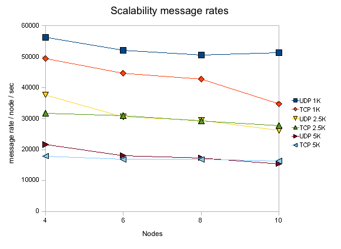

Author: Bela Ban
Date: August 2008
The tests were conducted in the JBoss lab in Atlanta. Each box
was:
Dell PE1850 2x 3Ghz EM64T processors
4GB memory
Red Hat Enterprise Linux (RHEL) 4
OS: Linux 2.6.9-42.0.10.smp
The tests were run only on 64-bit systems.
The following switch was used:
1GBps: Dell Power Connect 5224 (24 port gige L2 managed switch) with jumbo frames enabled. All NICs had MTUs of 1500 bytes. We didn't have the time to switch to jumbo frames.
Note that neither the network nor the test machines were
reserved exclusively for the performance tests, so some of
the
fluctuations are explained by the fact that other users/processes
were using the machines and/or generating traffic on the network.
This was mitigated somewhat by running all tests in the AM hours (8am
- 3pm) in Europe, when the servers in
Atlanta GA were mostly idle.
We also used machine which have no cron jobs (like cruisecontrol etc)
scheduled that could interfere with the tests.
The following JVMs were used:
SUN JDK 1.6.0_03-b05
The options used for starting the JVMs were:
-server
-Xmx600M -Xms400M -XX:+UseParallelGC -XX:+AggressiveHeap
-XX:CompileThreshold=100 -XX:SurvivorRatio=8
-XX:TargetSurvivorRatio=90 -XX:MaxTenuringThreshold=31
-Dlog4j.configuration=file:/home/bela/log4j.properties
-Djgroups.bind_addr=${MYTESTIP_1} -Dcom.sun.management.jmxremote
-Dresolve.dns=false
The goal of the test is to measure the time it takes to reliably send N messages to all nodes in a cluster. (We are currently not interested in measuring remote group RPC, this may be done in a future performance test.) The test works as follows.
All members have access to 2 configuration files: one for defining the number of messages to be sent, the number of cluster members, senders etc, and the other one defining the JGroups protocol stack.
N processes are started. They can be started on the same machine, but for better results there is one JGroups process per box
The processes join the same group, and when N equals the cluster size defined in the configuration file, all senders start sending M messages to the cluster (M is also defined in the configuration file).
Every node in the cluster receives the messages (senders are also receivers). When the first message is received, the timer is started. When the last message is received the timer is stopped. Every member knows how many messages are to be received: <number of senders> * <number of messages>. This allows every receiver to compute the message rate and throughput (we also know the size of each message).
The test is part of JGroups:
org.jgroups.tests.perf.Test. The driver is JGroups independent and
can also be used to measure JMS performance and pure UDP or TCP
performance (all that needs to be done is to write a Transport
interface implementation, with a send() and a receive()).
The
configuration file (config.txt) is shown below (only the JGroups
configuration is shown):#
Class implementing the org.jgroups.tests.perf.Transport
interface
transport=org.jgroups.tests.perf.transports.JGroupsTransport
#transport=org.jgroups.tests.perf.transports.UdpTransport
#transport=org.jgroups.tests.perf.transports.TcpTransport
#
Number of messages a sender sendes
num_msgs=1000000
#
Message size in bytes
msg_size=1000
# Expected number of
group members
num_members=2
# Number of senders in the
group. Min 1, max num_members
num_senders=2
# dump stats
every n msgs
log_interval=100000
This
file must be the same for all nodes, so it is suggested to place it
in a shared file system, e.g. an NFS mounted directory.
The
following parameters are used:
|
transport |
An implementation of Transport |
|
num_msgs |
Number of messages to be sent by a sender |
|
msg_size |
Number of bytes of a single message |
|
num_members |
Number of members. When members are started, they wait until num_members nodes have joined the cluster, and then the senders start sending messages |
|
num_senders |
Number of senders (must be less then or equal to num_members). This allows each receiver to compute the total number of messages to be received: num_senders * num_msgs. In the example, we'll receive 2 million 1K messages |
|
log_interval |
Output about sent and received messages will be output to stdout (and to file if -f is used (see below)) every log_interval messages |
The options for the test driver
are:
bela@laptop /cygdrive/c
$
java org.jgroups.tests.perf.Test -help
Test [-help] ([-sender] |
[-receiver]) [-config <config file>] [-props <stack config>]
[-verbose] [-jmx] [-dump_stats] [-f <filename>]
|
-sender / - receiver |
Whether this process is a sender or a receiver (a sender is always a receiver as well) |
|
-config <file> |
Points to the configuration file, e.g. -config /home/bela/config.txt |
|
-props <props> |
The JGroups protocol stack configuration. Example: -props c:\fc-fast-minimalthreads.xml. Can be any URL |
|
-verbose |
Verbose output |
|
-jmx |
Enables JMX instrumentation (requires JVM with JMX MBeanServer, e.g. JDK5). This will cause the VM not to terminate when done. To access the process via JMX, the -Dcom.sun.management.jmxremote property has to be defined and jconsole can be used. For more details see http://wiki.jboss.org/wiki/Wiki.jsp?page=JMX. |
|
-dump_stats |
Dumps some JMX statistics after the run, e.g. number of messages sent, number of times blocked etc |
|
-f <filename> |
Dumps number of messages sent, message rate, throughput, current time, free and total memory to <filename> every log_interval milliseonds. This is the main tool to generate charts on memory behavior or message rate variance |
|
-help |
This help |
The files needed to run te tests are included
with JGroups (source distribution) as well: JGroups/conf/config.txt
is the test configuration file, and JGroups/conf/{udp,tcp}.xml are
the JGroups protocol stack config files. Note that all the test runs
will have the JGroups stack configuration file included so that they
can be reproduced.
For additional details on how to run the
tests refer to http://wiki.jboss.org/wiki/Wiki.jsp?page=PerfTests.
The parameters that are varied are:
Cluster size: 4, 6, 8 and 10
Number of senders: N (where N is the cluster size); every node in the cluster is a sender
Number of messages: 1 million (constant, regardless of cluster size)
Message size: 1K, 2.5K and 5K
Switch: 1GB/sec
Protocols: IP multicast-based transport (udp.xml) and TCP-based transport (tcp.xml)
JVMs: SUN JDK6
JGroups 2.6.4.RC1 (CVS Aug 15 2008)
The plain results are available here
for the 4 node cluster, here for the 6 node
cluster and here for the 8 node cluster. The
OpenOffice spreadsheet containing all results can be obtained here.
The performance tests were run on the cluster, measuring message
rate (messages received/sec) and throughput (MB received/sec), as
described in http://wiki.jboss.org/wiki/Wiki.jsp?page=PerfTests.
The
JGroups configurations used are:
UDP (udp.xml): uses IP multicast in the transport, with FC as flow control implementation
TCP (tcp.xml): uses multiple TCP connections in the transport
The Y axes define message rate and throughput, and the X
axis defines the message size. The message rate is computed as
<number of messages sent> * <number of senders> / <time
to receive all messages>. For example, a message rate of 35000 for
1K means that a receiver received 35000 1K messages on average per
second. On average means that - at the end of a test run - all nodes
post their results, which are collected, summed up and divided by the
number of nodes. So if we have 2 nodes, and they post message rates
of 10000 and 20000, the average messsage rate will be 15000.
The
throughput is simply the average message rate times the message
size.

All of the tests were conducted with a relatively
conservative configuration, which would allow for the tests to be run
for an extended period of time. For example, the number of credits in
flow control was relatively small. Had we set them to a higher value,
we would have probably gotten better results, but the tests would not
have been able to run for an extended period of time without running
out of memory. For instance, the number of credits should be a
function of the group size (more credits for more nodes in the
cluster), however, we used (more or less) the same configuration for
all tests. We will introduce an enhanced version of the flow control
protocol which dynamically adapts credits, e.g. based on free memory,
loss rate etc, in http://jira.jboss.com/jira/browse/JGRP-2.
Compared
to the previous tests (2007), the message rates and throughput for
UDP is now considerably higher than before, in most cases even higher
than the TCP based configuration. This is caused by performance
modifications in JGroups and by setting core.net.rmem_max to 20000000
(from 131'000). The latter change allows the UDP stack to buffer more
datagrams, triggering fewer retransmissions and therefore increasing
performance. Note that https://jira.jboss.org/jira/browse/JGRP-806
certainly also made a big difference.
Note that for this test, for administrative reasons, we
could not make use of jumbo frames and the MTU was 1500 instead of
9000 for the 2007 test. This likely affects throughput for larger
messages.
The throughput of UDP has little variance for 1K
messages and ranges from 56 MB/sec on 4 nodes to 51 MB/sec on 10
nodes. This is significantly better than TCP which starts at 49
MB/sec on 4 nodes and drops off to 34 MB/sec on 10 nodes. We can also
see that the drop in throughput for UDP is worse for 2.5K messages
(from 94 MB/sec on 4 nodes down to 65 MB/sec on 10 nodes) and for 5K
messages (from 107 MB/sec on 4 nodes down to 77 MB/sec on 10 nodes).
We attribute this to the fact that jumbo frames were not used: large
UDP datagrams are fragmented into more IP packets (that need to get
retransmitted on a single loss) with an MTU of 1500 than with 9000.
TCP doesn't have this issue as it generates IP packets which are
under the MTU's size.
As can be seen in “Scalability per node”, message rates and throughput degrade slightly as we increase the cluster size. Reasons could be that the switch starts dropping packets when overloaded or flow control (FC) has too few credits (which are statically set, but should be allocated as a function of the cluster size). This will be investigated in one of the next releases.
Note that all numbers for message rates and throughput are shown per node, ie. the number of MBs a single node receives on average per second. If we aggregate those numbers and show the total traffic over the entire cluster, we can see (in “Scalability per cluster”) that we scale pretty well, although not 100% linearly. The figure shows that we can deliver ca. 500'000 1K messages over a cluster of 10 with UDP, and have an aggregate cluster wide throughput of over 800 MB/sec.
The test
program currently doesn't do any processing at the receiver when
a message is received. Instead, a message counter is increased and
the size added to the total number of messages received so far. This
is of course an ideal situation, and not realistic for normal use,
where receivers might unmarshal the message's byte buffer into
something meaningful (e.g. an HTTP session modification), and process
it (e.g. updating an HTTP session). (The test by the way allows to
take processing time at the receiver into account by setting the
processing_delay value).
Compared to the 2.4
performance tests, we didn't run the tests multiple times.
Instead, we ran each test only once, so the numbers shown are not
averaged over multiple runs of a given test. We also didn't adjust
the JGroups configs for the different cluster sizes. For example, the
number of credits in flow control (FC and SFC) should have been
increased with increasing cluster size. However, we wanted to see
whether we get reasonable numbers for the
same configs run on different clusters.
If you run the perf tests yourself and get even better
numbers, we'd be interested to hear from you !
We showed that performance of JGroups is good for
clusters ranging from 4 to 10 nodes. Compared to the 2007 tests, the
UDP stack now has better performance than the TCP stack.